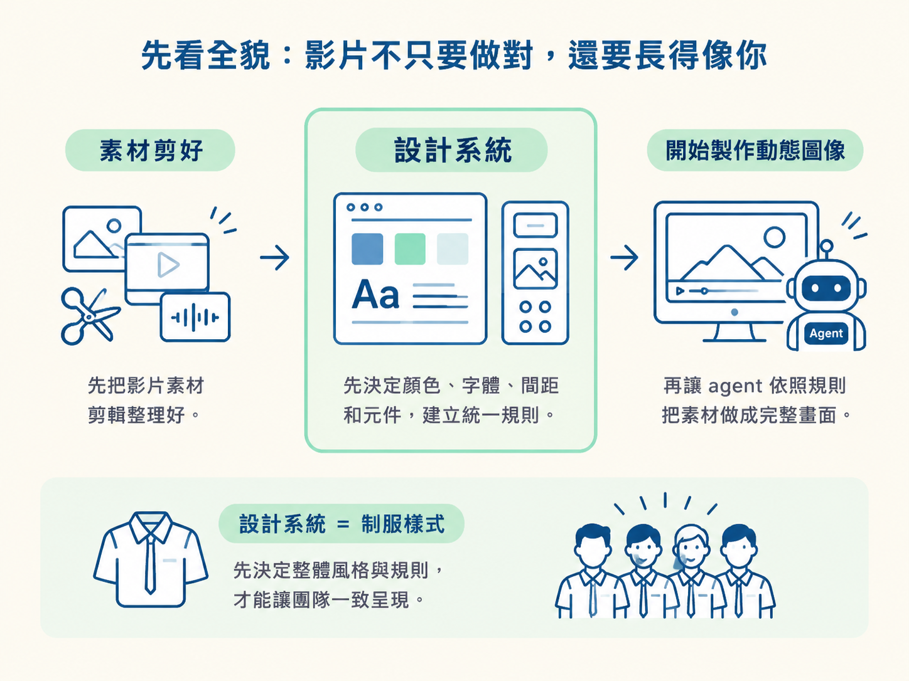
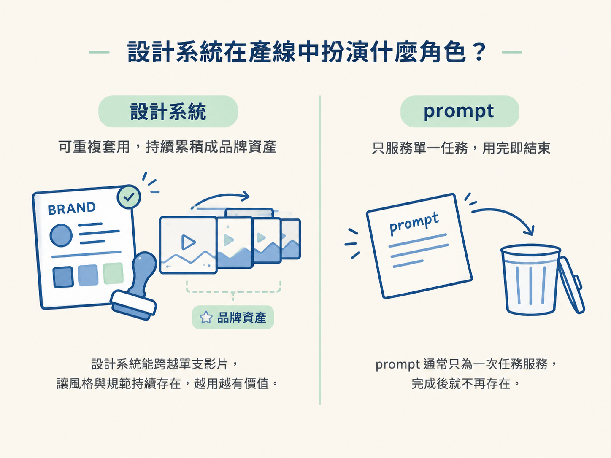

學完這一節，你會知道為什麼沒有設計系統的 AI 動畫容易長得像通用樣板，也能理解設計系統在整條影片產線裡站在哪個位置。
想像一下，你已經把素材剪乾淨，逐字稿也對齊了。接著，你請 agent 加上動態圖像。它交出的成品有標題、重點字卡和幾個轉場，該有的都有，看起來也不算難看。
但把這支影片和網路上其他作品放在一起，你卻很難一眼認出它是你的。問題通常不在剪輯，模型也未必不夠好，缺的是一套明確的外觀規則。
在整條產線裡，設計系統位在「素材剪好」之後、「開始製作動態圖像」之前。它先決定影片要用什麼顏色、字體、間距和元件，再讓 agent 依照這套規則把素材做成完整畫面。這就像先決定制服的樣式，再讓整個團隊穿上它。

如果你只對 agent 說「幫我加上動態圖像」，卻沒有指定影片應該長什麼樣子，它就只能退回訓練資料裡最常見的做法。那可能是某種字體、某種藍色，或某種大家都看過的轉場方式。
因為大家使用的模型相近，模型採用的這些「最大公約數」也往往相近。於是，沒有額外規則時，你拿到的就是「大家都可能拿到的那一份」。
這類作品常被形容成 AI 生成的廉價樣板。它倒不是完全不能用，只是少了辨識度：格式正確、欄位齊全，卻讓人看完記不住。它很像一份公版履歷，沒有明顯錯誤，但你很難從中記得這個人是誰。
反過來，只要給 agent 一套清楚的規則，同樣的素材、同一句「加上動態圖像」，最後也可能呈現完全不同的樣子。真正拉開差距的，是你有沒有說明這支影片應該使用哪些顏色、字體、間距和形狀。
這份把外觀規則寫清楚的文件，就是設計系統（design system）。
用制服來比喻會很直觀：同一群人穿上同一套制服，站在一起就像同一個團隊；如果每個人都穿自己的衣服，旁人就不容易看出他們屬於同一個組織。設計系統就是影片的制服，讓每支作品一出現，就能被認出是同一家。
DESIGN.md 裡會寫什麼？在這種使用 agent 剪片的工作流中，設計系統通常會整理成一份名為 DESIGN.md 的 Markdown 檔，放在專案資料夾裡。它會把幾個重要面向說清楚：
這份文件最重要的價值，是讓風格變成可以照著執行。agent 不必靠感覺猜測品牌外觀，而是依照文件中的具體數值和規則製作畫面。
因此，後面的流程會一直強調要原文存下。如果有人在途中悄悄改掉一個顏色或字體，原本建立起來的品牌感就可能像調錯濾鏡一樣，整支影片立刻走味。
從流程來看，設計系統接在「素材已經剪好」之後，並且先於「開始製作動態圖像」。正確的順序是：先準備一份乾淨的 cut，再決定影片要使用哪一套外觀，最後才把兩者一起交給 agent 製作。
如果順序顛倒，你可能先花掉一輪動畫製作成本，完成後才發現整體風格不對。設計系統就像施工前的設計圖，先把方向定下來，才不會等到房子蓋完，才發現門窗全裝錯。
它也是少數能夠跨影片留下來的東西。剪輯手法可能每支影片都不同，但設計系統一旦建立，就能持續套用到後續作品。相較之下，prompt 通常只做一次工，用完就結束。

所以，設計系統是可以累積的品牌資產；prompt 則比較像一次性的工作指令。
沒有設計系統時，agent 只能退回它看過的最大公約數，影片自然容易長得一樣。設計系統則是一份把顏色、字體、間距和使用規則寫清楚的文件，將「影片應該長什麼樣子」具體告訴 agent。它會跨影片留下來，成為品牌資產，而不是用完即丟的 prompt。
那麼，這份 DESIGN.md 要從哪裡來？你不必從零開始設計一套。下一節會帶你從現成的設計系統庫挑選一套、把原文存進專案；如果找不到合適的現成檔案，也會示範如何從一段參考影片反推出一套設計系統。